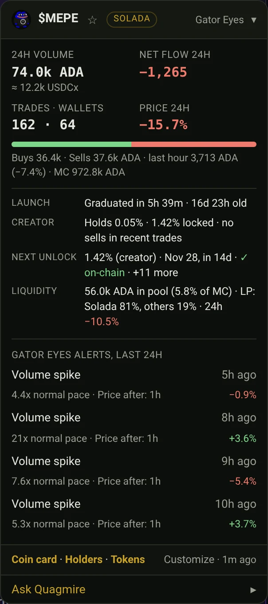

Coin panel
A small panel on every Solada.fun and Snek.fun coin page, including graduated coins on Markets.
- 24h volume and net flow (ADA bought minus sold), trades, wallets and price change
- Gator Eyes alerts on that coin in the last 24 hours, and what the price did after
- Creator watch: creator holdings, locked supply and any creator sells
- Next unlock, launch speed and pool liquidity
- Customize which sections show; hidden sections stop loading